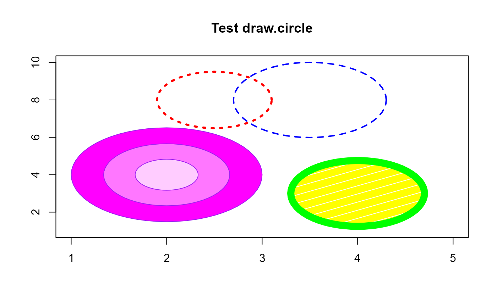

Draw circles on an existing plot.
Usage
circle(
x,
y,
radius,
nv = 60,
border = NULL,
col = NA,
lty = 1,
density = NULL,
angle = 45,
lwd = 1
)Arguments
- x, y
Coordinates of the center of the circle. If
xis a vector of length 2,yis ignored and the center is taken asx[1], x[2].- radius
Radius (or radii) of the circle(s) in user units.
- nv
Number of vertices to draw the circle.
- border
Color to use for drawing the circumference.
polygon- col
Color to use for filling the circle.
- lty
Line type for the circumference.
- density
Density for patterned fill. See
polygon.- angle
Angle of patterned fill. See
polygon.- lwd
Line width for the circumference.
Value
Invisibly returns a list with the x and y coordinates of the points on the circumference of the last circle displayed.
Details
Rather than depending on the aspect ratio par("asp") set globally or
in the call to plot,
circle uses the dimensions of the current plot and the x and y coordinates to draw a circle rather than an ellipse.
Of course, if you resize the plot the aspect ratio can change.
This function was copied from draw.circle
Examples
plot(1:5,seq(1,10,length=5),
type="n",xlab="",ylab="",
main="Test draw.circle")
# draw three concentric circles
circle(2, 4, c(1, 0.66, 0.33),border="purple",
col=c("#ff00ff","#ff77ff","#ffccff"),lty=1,lwd=1)
# draw some others
circle(2.5, 8, 0.6,border="red",lty=3,lwd=3)
circle(4, 3, 0.7,border="green",col="yellow",lty=1,
density=5,angle=30,lwd=10)
circle(3.5, 8, 0.8,border="blue",lty=2,lwd=2)
